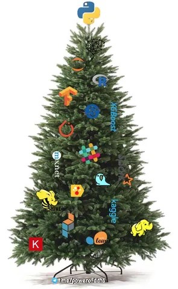

Наткнулся на шпаргалку, которую ровно год назад закидывал в свои команды. Некоторые пункты характерны для конкретного момента и этапа развития сервиса/команды в этот момент, но некоторые - вечны. Это короткий свод характеристик так называемого Technical Excellence, он не претендует на 100% полноту и не затрагивает организационные/продуктовые/бизнесовые требования (и не является полной team maturity model). Буду рад, если кому-то оно окажется полезным.
---
Господа, вашему вниманию предлагается чек-лист хорошего тимлида.
Набросал некий набор вещей, которые, как будто, должны всегда выполняться в каждой команде.
Можете использовать для самоконтроля на еженедельном уровне.
Можете использовать для составления селф-асессмента к мидревью и ревью.
Дополняйте, если что-то забыл (я же потом все равно вспомню ;) )
Некоторые пункты могут быть нерелевантны для части команд, но это вы сами разберетесь.
Список не упорядочен, все пункты примерно одинаково важны.
- наша команда практикует подход "3 амиго" перед началом работы над новой фичей
- наша команда пишет автотесты на новые фичи (может, не на все ТК, но значимо)
- в моей зоне ответственности нет неразобранных тикетов СИБ, а критичные чинятся сразу же
- на нашей доске задач полный порядок - все задачи актуальны, статусы корректны, задачи не висят в одном статусе неделями
- мы следим за TTM на регулярных встречах с продуктом и прикладываем усилия по доталкиванию эпиков, прежде чем начинать новые
- SLA на full resolve по дьютикам (обращения пользователей, партнеров, коллег) выполняется для 80+% тикетов
- у нас нет открытых дьютиков старше 2 недель
- количество задач на разработку из дьютиков не растет, а снижается или флэт на комфортном уровне
- мы работаем по ZBP - решение о фиксе принимается в пределах недели, баги чинятся за месяц (хотя бы 80+%)
- у нас нет просроченных экшн-айтемов по инцидентам и нет неразобранных инцидентов старше недели
- на тримапе (визуализация алертов) мои квадратики никогда не горят просто так, а если один и горит, то не больше пары дней
- утилизация всех ресурсов моих сервисов в зеленой зоне (включая БД и балансеры)
- все реально критичные алерты приходят в чат дизастерс (в идеале - еще автопротоколы), и на них настроена телефонная эскалация
- у нас сходятся спринты
- у наших сервисов нет постоянного паразитного фона 5хх или несемантических 4хх
Зона опциональных факторов, наличие которых дает плюсик в карму:
- тайминги наших ручек/экранов устойчиво снижаюся
- у нас есть регулярное автоматическое нагрузочное тестирование
- в нашем стриме баг-ликадж 12% или ниже, мы всей командой способствуем снижению пропуска багов
- мы заехали в варден (инструмент обзервабилити надежности) и получили девяточный тир надежности А (не путать с тиром критичности)
- ребята в команде осваивают T-shape скиллы
- у нас в логах мало ошибок, а те что есть - по делу
- нам прилетает мало алертов, а те что есть - по делу
- мы перешли на 1-недельные спринты и нам по кайфу
- мы написали документацию по контрибуторству в наши сервисы и наладили процесс иннер-сорса
---
За этот год мы отказались от некоторых критериев (например, от метрики баг-ликаджа, так как на маленьких абсолютах она стала шуметь), автоматизировали контроль за другими (например, настроили алертинг на деградацию таймингов), добавили новые требования к системе (более четкие SLO на availability по тирам критичности, оцифрованный alerts uptime, стали более плотно трекать прогресс по автоматизации тестирования). Но в целом - культура Technical Excellence только усиливается.
Да, метрик много, за всем уследить тяжело. Клюв вытащишь - хвост застрянет, хвост вытащишь - клюв застрянет.
Но ничего - ворчим, но, сжав зубы, делаем Еду стабильней и качественней!
P.S. Если вы хотите работать в такой инженерной культуре - го к нам! https://yandex.ru/jobs/services/eda или пишите в предложку или личку @jkennedy
